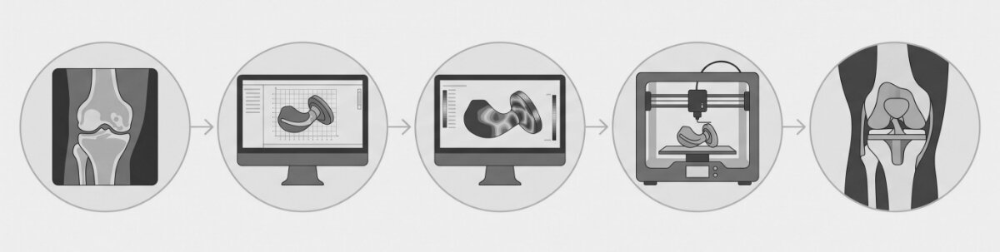
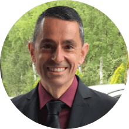
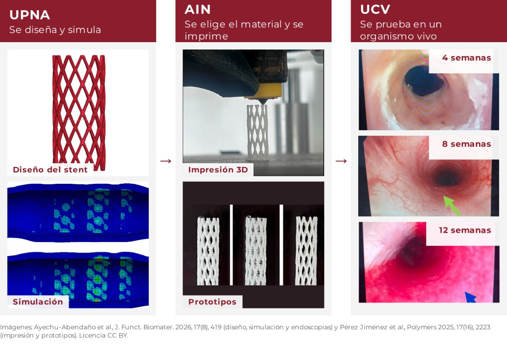

Del quirófano al laboratorio: ¿cómo se construye una prótesis?
Una prótesis es un dispositivo que sustituye, apoya o restablece la función de una parte del cuerpo. Bajo ese nombre caben dispositivos muy distintos: una prótesis de cadera o rodilla, una válvula cardíaca, un implante dental, un stent que mantiene abierta una vía o incluso un dispositivo que devuelve parte de la audición. Algunos se utilizan en el exterior del cuerpo; otros permanecen implantados durante años y todos comparten una misma exigencia: funcionar de forma segura.
Aunque hoy en día nos resulten cotidianos, son el resultado de una larga evolución en la que se han ido sumando conocimientos de medicina, ingeniería y ciencia de materiales. Desarrollar una prótesis implica decidir su forma, su material, cómo se comportará dentro del cuerpo y cómo fabricarlo con garantías. Cada una de esas decisiones se toma en una fase distinta del proceso y por profesionales distintos. Entender cómo se encadenan ayuda a ver por qué trabajar juntos es imprescindible.
Una prótesis no se construye en un solo lugar: se construye en la conversación entre quienes la necesitan, diseñan, fabrican y validan.
El recorrido en 5 pasos
- Identificación de la necesidad clínica Todo parte de un problema que necesita respuesta. El equipo sanitario identifica qué función debe recuperar, mantener o sustituir el dispositivo y qué condiciones debe cumplir.
- Diseño del dispositivo Se definen la forma, las dimensiones y las características que debe tener la prótesis. Según el caso, pueden utilizarse imágenes médicas, modelos digitales y herramientas de diseño para estudiar distintas soluciones.
- Simulación computacional Antes de fabricar nada, se estudia a nivel computacional cómo responderá el diseño a las cargas, las deformaciones y el contacto con el tejido.
- Fabricación El diseño se convierte en un dispositivo físico mediante técnicas de fabricación y materiales adecuados a sus características y función.
- Validación y aplicación clínica El dispositivo se somete a las pruebas y evaluaciones necesarias para comprobar su comportamiento y seguridad.
Cada paso suele estar en manos de profesionales distintos: la clínica conoce la necesidad y la ingeniería y la investigación diseñan, fabrican y comprueban la solución. Por eso conviene que el diálogo empiece pronto.
¿Qué está pasando en Navarra?
Cuando un modelo 3D ayuda a salvar distancias
En 2020, un equipo del entonces Complejo Hospitalario de Navarra se enfrentó a un reto complejo: adaptar una prótesis arterial a la anatomía de un paciente con un aneurisma de aorta. Para hacerlo, trabajó junto con profesionales de ingeniería biomédica e imprimió un modelo 3D de la aorta a tamaño real.
Ese modelo permitió localizar con precisión los orificios que debían realizarse para mantener el flujo sanguíneo hacia las principales arterias. Un ejemplo de cómo la colaboración entre clínica e ingeniería puede ayudar a resolver una necesidad concreta. Conoce el caso de la prótesis de aorta
La tecnología también está en el quirófano
En la Clínica Universidad de Navarra, la cirugía robótica se utiliza para ayudar a planificar y guiar la colocación de prótesis de cadera y rodilla. Antes de la intervención, un TAC permite reconstruir en 3D la anatomía del paciente y planificar el tamaño y la posición de la prótesis. Conoce la cirugía robótica de la CUN
Otros ejemplos
Y más allá de los hospitales, en Navarra también se investigan nuevos materiales y formas de fabricación para desarrollar los dispositivos del futuro. En AIN, la Red Cervera DIM3D trabajó en el desarrollo de dispositivos médicos y materiales para aplicaciones sanitarias. En el ámbito universitario, la UPNA investiga stents traqueales biodegradables, mientras que Tecnun estudia nuevas estructuras porosas para implantes de cadera.
El mapa en una tabla
| Eslabón | Quién en Navarra | Qué hace |
|---|---|---|
| Clínica | SNS-O (unidad de impresión 3D, desde 2019); CHN; CUN (Dr. Díaz de Rada, Dr. Granero) | Modelos 3D y planificación (ortopedia y otros), prótesis de aorta adaptada con modelo 3D (vascular), cirugía asistida por robot (ortopedia) |
| Fabricación | AIN (Cristina Díaz) | Fabricación aditiva, biomateriales, prototipos de prótesis de rodilla y cráneo, stents |
| Simulación y validación | UPNA (Mauro Malvè); Tecnun-UNAV (Sergio Ruiz de Galarreta) | Elementos finitos y biomecánica: stents y prótesis traqueobronquiales (UPNA), implante de cadera (Tecnun) |
Un caso real en Navarra
BIOAIR
Un stent traqueal biodegradable, impreso en 3D y personalizable
La tráquea es el conducto que permite que el aire llegue hasta los pulmones. Cuando se estrecha o pierde estabilidad, respirar puede convertirse en un reto. En determinados casos se utilizan stents, pequeños dispositivos que ayudan a mantener abierta la vía aérea.
Sin embargo, estos dispositivos también plantean desafíos: deben proporcionar el soporte necesario, comportarse adecuadamente en contacto con los tejidos y responder a las necesidades clínicas para las que se diseñan. Además, en algunos pacientes, el stent solo es necesario durante un periodo determinado. Cuando el dispositivo permanece en la vía aérea más tiempo del necesario, puede generar complicaciones y, en ocasiones, requerir una nueva intervención para retirarlo.
¿Sería posible desarrollar un stent que, además de cumplir su función, se degradara de forma controlada con el tiempo?
Esta es una de las cuestiones que aborda BIOAIR, un proyecto de investigación coordinado por la Universidad Pública de Navarra (UPNA) y financiado por el Ministerio de Ciencia e Innovación. El proyecto se organiza en tres subproyectos complementarios, liderados por distintos socios.

Mauro Malvè
Coordinador de BIOAIR
- Cargo
- Catedrático de Universidad. Departamento de Ingeniería, UPNA
- Líneas de trabajo
- Biomecánica y dispositivos médicos, elementos finitos y CFD, prótesis traqueobronquiales
- Contacto
- mauro.malve@unavarra.es
Un proyecto, tres equipos

UPNA
Universidad Pública de Navarra
Investigador principal: Dr. Mauro Malvè
Diseña y simula
Una herramienta computacional permite definir un stent, cambiar su forma y ver cómo se comporta y cómo toca la pared de la vía aérea.
AIN
Asociación de la Industria Navarra
Investigadora principal: Dra. Cristina Díaz Jimenez
Elige el material e imprime
Tras estudiar varios materiales, se eligió una mezcla de dos polímeros biodegradables (PLA y PCL) y se imprimieron prototipos con diseños nuevos.
UCV
Universidad Católica de Valencia
Investigadora principal: Dra. Rocío Fernández Parra
Prueba en un organismo vivo
Los prototipos se implantaron en la tráquea de conejos y se observó la respuesta de los tejidos.
Los resultados publicados muestran avances en el diseño y la evaluación de los stents, incluidos estudios preclínicos. Todavía no se trata de dispositivos de uso clínico en personas. Quedan etapas de investigación y evaluación antes de poder valorar su posible aplicación en pacientes.
Más información: J. Funct. Biomater. (2026) · Polymers (2025)
¿Qué nos dicen estos ejemplos sobre Navarra?
Los ejemplos que hemos visto muestran que en Navarra ya se está trabajando en este campo. Hay prótesis que se utilizan en hospitales y proyectos que exploran nuevos materiales y formas de diseñarlas. En muchos casos, detrás de estos avances hay profesionales de la salud, investigadores e ingenieros trabajando juntos.
El siguiente paso es seguir acercando esos mundos. Porque una buena idea no termina cuando se diseña o se fabrica un dispositivo: hay que comprobar que funciona y es seguro, y encontrar la manera de llevarlo a la práctica clínica.
Navarra tiene talento y proyectos para seguir avanzando. Cuanto más fácil sea compartir necesidades, conocimientos y experiencias entre quienes trabajan en este ámbito, más oportunidades habrá de que la investigación se convierta en soluciones útiles para los pacientes.
¿Quieres participar en los próximos números?
En ATESANA queremos seguir dando a conocer los proyectos, las personas y las iniciativas que impulsan la tecnología sanitaria en Navarra. Si trabajas en este ámbito o conoces alguna iniciativa que merezca ser contada, nos encantará conocerla.
Puedes escribirnos a info@atesana.com o a través del apartado de Contacto de nuestra web. Cada propuesta nos ayuda a descubrir nuevas capacidades, dar visibilidad al trabajo que se está haciendo en Navarra y acercar a las personas que forman parte de este ecosistema.
Gracias por formar parte de los cimientos de ATESANA
Seguimos construyendo juntos
El equipo de ATESANA